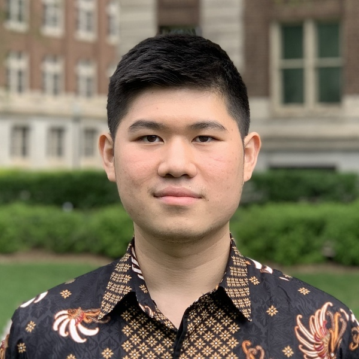

I am an MPhil student in Computer Science and Engineering at the University of New South Wales. My research focuses on generative recommendation and large language models. Before my MPhil, I earned my Bachelor of Science in Statistics from the University of Minnesota in 2022, with minors in Computer Science and Mathematics. My interests and passion lie in designing, building, and operating machine learning / AI systems that solve real-world problems. I previously worked at PT Lippo Karawaci, where I built LLM-based invoice validation and OCR systems to reduce submission errors, payment delays, and manual approval work, and developed an AI-enabled customer-service platform for their hotel business. Before that, I worked at DataOn as the company’s first data scientist, where I led its machine learning and AI initiatives, automated HR reporting with LLMs, built an employee-attrition forecasting model, and mentored four interns.I am currently actively seeking internship and full-time opportunities in machine learning / AI.